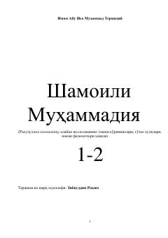

SSPayg'ambarimiz alayhissalomning sharafli xulqlari va sifatlariga bag'ishlangan Termiziy asarining sharhi.
Ushbu asar Imom Termiziyning mashhur «Shamoili Muhammadiya» kitobiga Ziyovuddin Rahim tomonidan yozilgan o'zbekcha tarjima va kengaytirilgan sharhdir. Kitobda Payg'ambar Muhammad alayhissalomning tashqi ko'rinishlari, go'zal xulq-atvorlari, insoniy fazilatlari va kunlik hayot tarzlari haqida rivoyat qilingan hadislar atroflicha bayon etiladi.